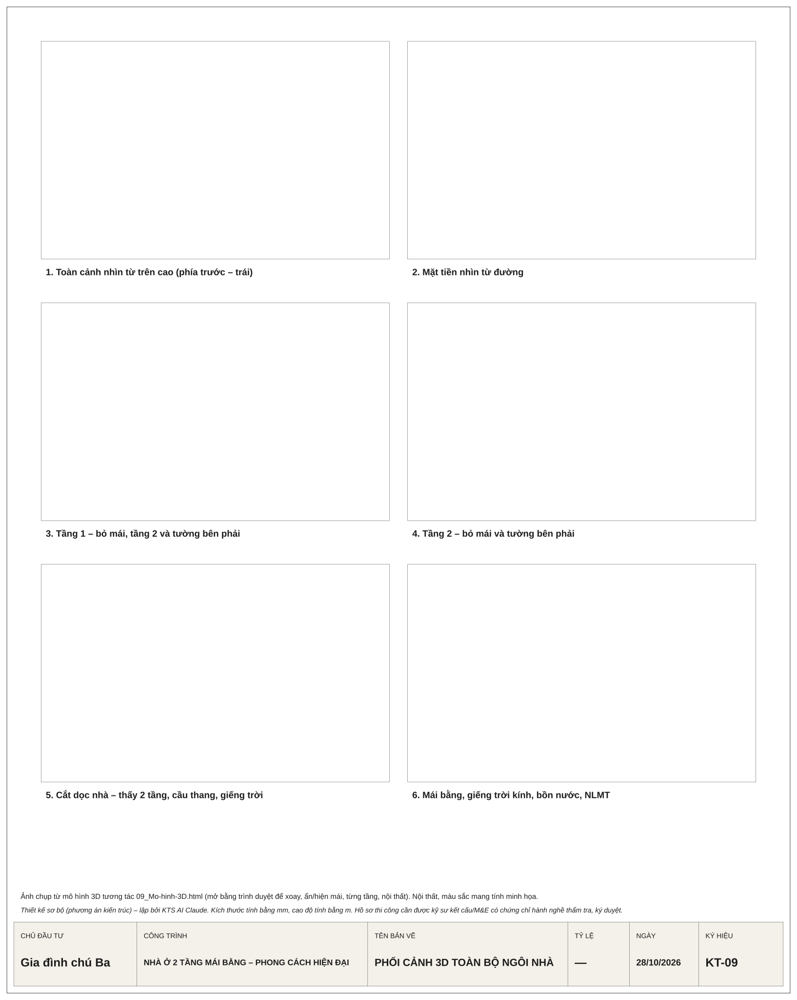
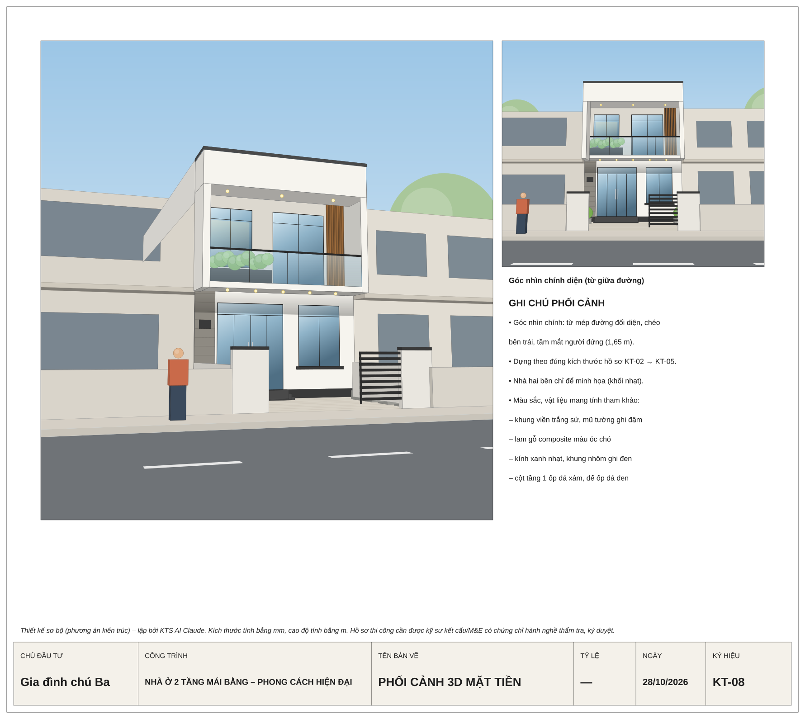

1. Tổng quan
Những thay đổi trong bản cập nhật
- Phòng thờ chuyển lên phía trước tầng 2, nằm cạnh phòng ngủ 2, có cửa sổ nhìn ra ban công và mặt đường.
- Cầu thang đổi sang chạy dọc nhà: 2 vế chữ U song song theo chiều sâu, nằm giữa nhà sát tường phải. Chân thang ở trong bếp, đầu thang ra khu sinh hoạt chung tầng 2.
- Bố trí lại các phòng tầng 1 và tầng 2 theo vị trí cầu thang mới. Khối WC, phòng ngủ phía sau và sân phơi giữ nguyên.
- Chi phí lập lại theo ngân sách 1,2 tỷ đồng (mục 7).
- Mô hình 3D tối ưu cho điện thoại để chia sẻ qua đường link.
Ý tưởng thiết kế
Nhà ống mặt tiền 6 m, 2 tầng, mái bằng BTCT, không làm mái dốc. Khối nhà vuông vức. Tầng 2 được bao bởi một khung viền bê tông trắng đua ra 1,2 m làm ban công; phía trong là mặt kính kết hợp lam gỗ đứng che nắng. Tông màu chủ đạo là trắng, ghi đen và gỗ ấm.
Nhà ống thường bí và tối ở các phòng giữa. Thiết kế này lấy sáng và gió qua 2 giếng trời: giếng trời kính ngay trên ô cầu thang ở giữa nhà, và giếng trời kiêm sân phơi ở phía sau. Gió vào từ mặt tiền, đi xuyên qua nhà rồi thoát lên các giếng trời (hiệu ứng ống khói).
2. Danh mục bản vẽ
Mô hình 3D tương tác: mở 09_Mo-hinh-3D.html để xem. Trên điện thoại: một ngón để xoay, hai ngón để phóng to hoặc di chuyển. Thanh phía dưới có các góc nhìn có sẵn; nút ⚙ dùng để ẩn mái, ẩn từng tầng, bỏ tường để nhìn vào trong và bật tên phòng.
Các bản vẽ kỹ thuật đều có file .svg (xem trên trình duyệt, in được theo tỷ lệ 1/100) và file .dxf trong thư mục DXF/ (mở bằng AutoCAD, đơn vị mm).





3. Bảng công năng – diện tích (thông thủy)
| Tầng | Không gian | Kích thước (m) | Diện tích | Ghi chú |
|---|---|---|---|---|
| Sân | Sân trước | 6,0 × 5,0 | 30,0 m² | Để 1 ô tô cỡ nhỏ hoặc 3–4 xe máy; 2 dải bồn cây; cổng trượt rộng 4 m; bể nước ngầm 3 m³ |
| Tầng 1 +0.450 | Phòng khách | 5,6 × 3,5 | 19,6 m² | Cửa chính 4 cánh rộng 2,4 m; sofa, kệ TV, tủ giày |
| Phòng ăn | 3,4 × 3,5 | 11,9 m² | Bàn ăn 6 ghế, đặt cạnh cầu thang; kệ trang trí dưới chiếu nghỉ | |
| Bếp | 5,6 × 2,1 | 11,8 m² | Bếp chữ I dài 3,3 m dọc tường sau và tủ lạnh. Chân cầu thang nằm trong bếp | |
| Phòng ngủ 1 | 3,0 × 3,3 | 9,9 m² | Giường 1,6 m, tủ áo; cửa sổ nhìn ra sân phơi; phù hợp cho ông bà | |
| WC1 | 1,4 × 2,4 | 3,4 m² | Lavabo, bồn cầu, tắm đứng vách kính | |
| Kho | 1,4 × 0,8 | 1,1 m² | Thêm kho dưới vế 1 cầu thang | |
| Hành lang | 1,0 × 3,3 | 3,3 m² | Từ bếp ra sân phơi | |
| Sân phơi | 5,6 × 2,0 | 11,2 m² | Lộ thiên (giếng trời); khu đặt máy giặt có sàn tầng 2 che phía trên | |
| Tầng 2 +4.050 | Ban công | 6,0 × 1,2 | 7,2 m² | Bồn cây, bàn trà, lan can |
| Phòng thờ (phía trước) | 2,2 × 3,4 | 7,5 m² | Cửa sổ lớn nhìn ra ban công. Bàn thờ tựa tường đặc, quay mặt ra phía trước. Phía trên là mái, không có phòng nào | |
| Phòng ngủ 2 | 3,3 × 3,4 | 11,2 m² | Giường 1,6 m, tủ áo; cửa kính lùa ra ban công | |
| Khu sinh hoạt chung | quanh ô cầu thang | 19,2 m² | Đầu cầu thang lên tới đây. Có sofa, bàn trà, kệ sách, tủ âm tường; nhìn xuống ô thông tầng có giếng trời | |
| Phòng ngủ 3 | 3,0 × 4,1 | 12,3 m² | Giường 1,4 m, tủ áo, bàn học; cửa sổ nhìn ra giếng trời | |
| WC2 | 1,4 × 2,4 | 3,4 m² | Đặt chồng đúng trên WC1. Không chung tường với phòng thờ | |
| Kho + tủ âm | 1,4 × 0,8 + 1,4 × 0,7 | 2,1 m² | ||
| Sân phơi | 2,5 × 2,0 | 5,0 m² | Giàn phơi; thang leo inox lên mái | |
| Giếng trời | 3,0 × 2,0 | 6,0 m² | Thông 2 tầng xuống sân phơi tầng 1 | |
| Mái +7.450 | Mái bằng BTCT | 6,0 × 14,0 | ≈ 78 m² | Bồn nước 1.500 L, dàn nóng điều hòa, (tùy chọn) máy nước nóng năng lượng mặt trời; tường chắn mái cao 1,1 m |
4. Giải pháp kiến trúc
Cầu thang chạy dọc nhà
- Cầu thang 2 vế chữ U, các vế chạy theo chiều sâu nhà, nằm giữa trục 2 và 3, sát tường bên phải. Ô cầu thang rộng 2,1 m, dài 3,5 m.
- Vế 1 bắt đầu trong bếp, đi lên về phía trước nhà tới chiếu nghỉ (cao độ +2.250). Vế 2 quay ngược lại và lên thẳng khu sinh hoạt chung tầng 2.
- Tổng 22 bậc; mỗi bậc cao 164 mm, sâu 250 mm, rất dễ đi. Mỗi vế rộng 1,0 m.
- Cầu thang không đâm thẳng ra cửa chính. Dưới vế 1 làm kho; dưới chiếu nghỉ làm kệ trang trí cho phòng ăn.
Phòng thờ ở phía trước
- Phòng thờ đặt ở mặt tiền tầng 2, cao nhất nhà, phía trên không có phòng nào. Cửa sổ lớn nhìn ra phía trước nên phòng sáng và thoáng.
- Bàn thờ tựa vào tường đặc, quay mặt ra phía trước. Cửa vào từ khu sinh hoạt chung, đặt lệch khỏi bàn thờ.
- WC2 ở phía sau nhà, cách xa phòng thờ. Giường phòng ngủ 2 kê đầu vào tường bên phải, không kê vào tường chung với phòng thờ.
Chiếu sáng và thông gió tự nhiên
- Giếng trời kính trên ô cầu thang có ô thoáng chớp để thoát khí nóng. Ánh sáng đi xuống tận phòng ăn và bếp.
- Giếng trời sau nhà thông 2 tầng: phòng ngủ 1, phòng ngủ 3 và hành lang đều có cửa sổ mở ra đây.
- Mặt tiền có 2 lớp (lam gỗ và kính), ban công lùi sâu 1,2 m giúp giảm nắng chiếu trực tiếp vào phòng thờ và phòng ngủ 2.
Chiều cao và phong thủy
- Nền cao hơn sân 0,45 m (3 bậc tam cấp). Tầng 1 cao 3,6 m, tầng 2 cao 3,4 m, tường chắn mái 1,1 m; tổng chiều cao +8,55 m.
- Bếp đặt dọc tường sau, không nhìn thẳng ra cửa chính. Hai WC không nằm phía trên bếp hay phòng thờ.
- Hướng nhà hiện chưa xác định. Khi có hướng đất và năm sinh gia chủ, có thể chỉnh lại hướng bếp và hướng bàn thờ cho hợp tuổi.
5. Kết cấu và hệ thống kỹ thuật (sơ bộ)
| Hạng mục | Giải pháp đề xuất |
|---|---|
| Kết cấu chính | Khung BTCT đổ toàn khối, bê tông B20 (M250), thép CB300-V / CB400-V. Hai hàng cột dọc tường biên (trục A, B) và 6 trục ngang 1–6. |
| Cột, dầm, sàn | Cột 200 × 300 (tầng 1), 200 × 200 (tầng 2); dầm chính 220 × 400; dầm viền ô cầu thang 220 × 300; sàn dày 120 mm; ban công công-xôn 1,2 m. |
| Móng | Móng băng hoặc móng cọc ép, chọn sau khi khảo sát địa chất. Hai bên giáp nhà liền kề nên dùng móng lệch tâm hoặc móng cọc. |
| Mái bằng | Sàn BTCT 120, chống thấm 2 lớp (quét lên chân tường 300 mm), vữa tạo dốc 2%, gạch chống nóng 6 lỗ, lát gạch đất nung. 2 phễu thu Ø90 phía sau. |
| Cấp nước | Bể ngầm 3 m³ dưới sân trước, bơm lên bồn inox 1.500 L đặt trên khu WC. |
| Thoát nước | Bể tự hoại 3 ngăn khoảng 4–5 m³ đặt ngầm dưới sân phơi; ống thông hơi đi lên mái. |
| Điện | Tủ điện tổng ở tầng 1, có CB chống giật cho từng tầng. Chừa sẵn đường ống cho 4 máy điều hòa (dàn nóng đặt trên mái). |
6. Vật liệu hoàn thiện (mức phù hợp ngân sách)
- Mặt tiền: sơn ngoại thất trắng, khung viền BTCT, cửa nhôm hệ màu ghi đen; cột tầng 1 ốp đá granite xám; lan can ban công bằng sắt hộp sơn tĩnh điện (có thể nâng lên kính cường lực sau); lam gỗ nhựa composite hoặc lam nhôm vân gỗ.
- Sàn: gạch porcelain 60 × 60 màu sáng; phòng ngủ dùng gạch vân gỗ; WC, sân phơi, sân trước lát gạch nhám chống trơn.
- Trần: thạch cao khung chìm ở tầng 1 và phòng thờ; các phòng còn lại tầng 2 bả matit và sơn trực tiếp.
- Cầu thang: mặt bậc đá granite, tay vịn gỗ, lan can sắt.
- Cửa trong nhà: cửa gỗ công nghiệp hoặc nhựa composite; WC dùng cửa nhôm kính mờ.
7. Ngân sách 1,2 tỷ đồng (chưa gồm đồ nội thất)
Diện tích tính giá quy đổi theo cách các nhà thầu thường dùng:
| Hạng mục | Diện tích (m²) | Hệ số | Quy đổi (m²) |
|---|---|---|---|
| Móng (băng hoặc cọc) | 90,0 | 50% | 45,0 |
| Tầng 1 trong nhà | 76,8 | 100% | 76,8 |
| Sân phơi tầng 1 | 13,2 | 50% | 6,6 |
| Tầng 2 và ban công | 84,0 | 100% | 84,0 |
| Sân phơi tầng 2 | 5,4 | 50% | 2,7 |
| Mái bằng BTCT | 84,0 | 50% | 42,0 |
| Sân trước, cổng, tường rào | 30,0 | 50% | 15,0 |
| Tổng diện tích quy đổi | ≈ 272 |
Phân bổ ngân sách đề xuất
| Khoản mục | Cách tính | Dự kiến (triệu đồng) |
|---|---|---|
| Phần thô và nhân công hoàn thiện | 272 m² × khoảng 3,4 triệu/m². Gồm móng, khung, sàn, xây tô, chống thấm, đi ống điện nước âm tường, nhân công ốp lát, sơn bả, lắp đặt | ≈ 925 |
| Vật tư hoàn thiện (mức phổ thông) | Gạch, sơn, cửa, thiết bị vệ sinh, đèn, công tắc, ổ cắm, đá cầu thang, lan can, giếng trời kính, bồn nước, máy bơm | ≈ 215 |
| Dự phòng phát sinh | Khoảng 5% | ≈ 60 |
| Tổng | 1.200 |
Đánh giá: 1,2 tỷ đủ để xây nhà ở được ngay (gồm phần thô và hoàn thiện cơ bản, chưa gồm nội thất rời như giường, tủ, sofa, rèm, điều hòa), nhưng ngân sách khá sát. Muốn giữ trong 1,2 tỷ thì nên áp dụng các cách tiết kiệm bên dưới. Nếu phải làm móng cọc hoặc dùng vật tư cao cấp hơn, tổng chi phí có thể lên khoảng 1,35–1,5 tỷ.
Cách giữ chi phí trong 1,2 tỷ
- Khảo sát địa chất trước khi chọn móng. Nếu nền đất tốt và dùng được móng băng thì rẻ hơn móng cọc khoảng 60–120 triệu.
- Cửa nhôm hệ trong nước thay cho nhôm nhập khẩu; cửa phòng dùng gỗ công nghiệp hoặc composite.
- Lan can ban công sắt sơn tĩnh điện thay cho kính cường lực. Lam mặt tiền dùng lam nhôm vân gỗ, hoặc để lại làm sau.
- Chỉ làm trần thạch cao ở tầng 1 và phòng thờ; các phòng còn lại tầng 2 bả và sơn trực tiếp.
- Chưa lắp máy nước nóng năng lượng mặt trời; mỗi WC dùng bình nóng lạnh (khoảng 3–4 triệu/bình), đi sẵn ống chờ để lắp sau.
- Giữ nguyên giếng trời kính trên cầu thang: đây là hạng mục quyết định ánh sáng và độ thoáng cho cả ngôi nhà, không nên cắt.
- Ký hợp đồng phần thô có nhân công hoàn thiện, gia đình tự chọn mua vật tư hoàn thiện để kiểm soát giá; ghi rõ khối lượng và chủng loại vật tư trong hợp đồng để tránh phát sinh.
Đơn giá trên là mức tham khảo năm 2026, thay đổi theo địa phương và thời điểm. Nên lấy báo giá từ 2–3 nhà thầu dựa trên bộ bản vẽ này để so sánh.
8. Bước tiếp theo
- Gia đình xem phương án và góp ý điều chỉnh.
- Đối chiếu sổ đỏ: kích thước thực tế, hướng nhà, chỉ giới xây dựng, quy định của địa phương về ban công đua ra (ban công 1,2 m hiện đua vào sân nhà mình, không lấn ra đường).
- Khảo sát địa chất và ghi nhận hiện trạng hai nhà bên cạnh để chọn loại móng.
- Lập hồ sơ xin phép xây dựng (nhà ở riêng lẻ trong đô thị bắt buộc phải có giấy phép).
- Thiết kế kỹ thuật thi công (kết cấu, điện, nước, chống sét). Phần này phải do kỹ sư có chứng chỉ hành nghề tính toán và ký; bộ bản vẽ hiện tại mới là phương án kiến trúc sơ bộ.
Bản vẽ SVG in theo tỷ lệ 1/100 · File DXF dùng đơn vị mm · Script tạo bản vẽ: nguon/tao_ban_ve.py